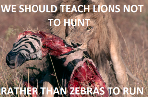

Thomas Hobbes is an Australian uni student hiding out in his mother's basement waiting for the singularity to arrive. As a backup plan he is secretly hoping to avoid the perils of an actual career by becoming a writer and travelling the world.


Before he died, George Carlin was one of America’s richest deposits of red pill wisdom:
“Rights!
Boy everyone in this country is always running around yammering about their fucking rights. I have a right, you have no right, we have a right!
Folks I hate to spoil your fun, but—there’s no such thing as rights. They’re imaginary. We made ’em up. Like the boogie man.
Rights are an idea. They’re a cute idea. Cute, but that’s all – cute, and fictional.
But if you think you do have rights, let me ask you this – where do they come from?
People say they come from God. They’re God given rights.
Aww fuck! Here we go again…”
Lets imagine that, tomorrow, our society were to collapse in some severe way – nuclear war, solar flare, the machines revolt—whatever, pick your apocalypse.
How long do you think the niceties of the modern world would last?
Social justice warriors are just one group constantly yammering on about “rights.” In their case, they’re generally negative rights.
They believe they have the right not to be offended, the right not to have to physically defend themselves, the right to avoid any real hardship, like an empty belly or lacking a roof over their heads.
Basically—the right to do anything they please without any consequences. Any flaw in their perfect little world must be corrected, and since they’re precious little flowers who would “never hurt anyone” somebody else must be at fault, and made to change their behavior. Only someone who grew up in the sterile confines of modern suburbia could be so delusional.
For most of human history life was a matter of day-to-day survival. You were grateful if you were able to put enough food on the table, that no barbarians raiders appeared on the horizon, that God did not cast down a thunderstorm to destroy the small wooden shack you called your home. As Hobbes would put it, life was “nasty, brutish and short.”
Going further back, the case against utopia only grows stronger. In our naked, primal state human beings rarely lived a peaceful existence. According to the best data we have, one in six hunter-gatherers died at the hands of fellow humans, puncturing the myth of the “noble savage.”
Looking at the animal kingdom, the picture is unquestionably worse. I have actually had arguments with people who try to dispute the savagery of nature. I point out that for nearly every type of living thing but humans, life ends with being eaten. For many species, including dolphins, chimpanzees, and orangutangs, behavior resembling rape is common, and may account for as much as half of all copulations.
Honest to god, I hear answers like – “but many animals require courting – that sounds like a form of consent to me!”
Pictured: A penguin consents to sex with a 200 kilogram Fur Seal
Despite its insanity, many would rather stick with the Disney narrative that nature is kind and gentle, and it is only modern, capitalist society that has corrupted our gentle souls.
Unfortunately, like all living things, human beings are selfish, petty, violent, emotional creatures at our core. People usually learn this around the same time they realize Santa Claus isn’t real.
The modern world however keeps piling on layer after layer of feel-good bullshit to try and bury our true nature until we’re more like machines than people. Many literally don’t realize this because they grew up in a bubble where the machinations of real power occur out of sight, and thus out of mind. Young women are particularly susceptible to this—after all, everyone’s always so nice to them.
Meanwhile men, who represent 70% of assault and 80% of murder victims, as well as more than 90% of the prison population, know only too well that the relative peace of the modern world is maintained solely by the respective police forces and armies of the world’s governments.
Opening your eyes just a little, you can see evidence of this all around you.
Many wonder why so many thousands of people, even those living the lives of comfortable westerners, have dropped everything to go join the Islamic State for instance.
At least part of the answer would seem to be an innate bloodlust, a fundamental desire for violence and excitement that modern life simply doesn’t provide. Yes, they may be stupid – but I would say they are not actually crazy.
Plenty of perfectly ordinary people have signed up to join. These people aren’t mentally ill, they’re just severely under-stimulated by the modern world to the point they find its banal routines insufferable. They have been insufficiently brainwashed by modern platitudes, and would rather take after our ancestors and live like a lion for a few months (probably the average life expectancy of an IS fighter) than endure a whole lifetime as a sheep.
There’s a stereotype that soldiers all turn out mentally damaged by the violence they see, but if anything they seem emotionally healthier than the general population. Suicide rates are no higher for veterans than a similar demographic of the population.
When was the last time you heard someone say of a serious crime like murder or rape that they “would never do that”? Given that such a high percentage of our ancestors died from murder, so by extension a similar portion were murderers, does this promise not sound extremely hollow?
Someone needs to do an experiment someday. Hook some volunteers up to a VR scenario, wipe their memories, and put them in a survival situation—stuck on a desert island perhaps, with no other sources of food.
I wonder what percentage of people, including said “wouldn’t hurt a fly” social justice warriors, will find themselves resorting to cannibalism to survive? I put forward the hypothesis that the average person, if pushed far enough, is capable of just about anything.
Almost anyone you meet feeds their appetite for drama somehow. Sports, action movies, and video games are all multi-billion dollar industries. Alcohol and drug abuse remain rampant, and suicide rates are on the rise in most western countries, even though they’ve never been safer or richer.
Agent Smith perhaps put it best:
Did you know that the first Matrix was designed to be a perfect human world? Where none suffered, where everyone would be happy.
It was a disaster. No one would accept the program. Entire crops were lost.
Some believed we lacked the programming language to describe your perfect world. But I believe that, as a species, human beings define their reality through suffering and misery.
The perfect world was a dream that your primitive cerebrum kept trying to wake up from.
Even social justice warriors themselves embody this. They demand people act calmly, rationally, and without hate at all times—while marching down a street waving signs, blocking traffic, getting people fired from their jobs because they made a comment they didn’t like, shouting abuse at those who don’t toe the official line and just generally being a nuisance.
Clearly, people need a cause to fight for. Otherwise, they will just make one up. No exceptions.
Despite all our achievements, at heart, human beings remain little more than fighting and fucking machines. We evolved to survive out on the savannah, dealing with death and suffering every day. Thousands of years of civilization later, our nature hasn’t changed.
Of course, the relatively peaceful era we live in is not a bad thing. I love the fact that I can walk the streets fairly safe from attack, that I have “rights” like voting, free speech, and so on. It’s great while the party lasts.
But I do not take any of this for granted. We must stay aware of the underlying reality – that all of this is based in quicksand, that society is fragile and that any city is just three meals away from anarchy. To this day, we shouldn’t be asking the question—“why do people act selfishly?” We should be asking: “why don’t they?”
The classic disconnect is when feminists demand that society should “teach men not to rape” rather than “teaching women not to be raped.”
Yes, its a noble idea, but you can only take it so far. They truly seem to believe that violence—which, at its core, is obviously a completely natural, instinctive behavior, needs to be “taught”.
I have been the victim of assault. I have been punched in the face. I have had a knife pulled on me. On that occasion I didn’t turn around and scream “How dare you threaten me! We should teach people not to stab, rather than victims to avoid being stabbed!”
No—I looked at it, managed to blurt out “That’s not a knife mate!” and ran the fuck away.
I sincerely wish we lived in a world where a woman’s odds of being raped are zero regardless of what she does, where she goes, and how she dresses. But do you really think we live in that kind of world, at least yet?

If you want to prevent rape, you must use the same carrot and stick methods you use everywhere else.
The stick is the law. Ensure procedures are in place to catch and jail rapists. Encourage victims to go to the police, but ensure they are only prosecuted with evidence. Never lie about rapes, thus reducing the credibility of victims everywhere. Feel free to shame actual rapists, but not on a mere accusation.
The carrot is ensuring that men have options to, as a feminist might put it, “express their sexuality.” Don’t shame them for seeking wives overseas. Teach young men the realities of modern dating, rather than keeping them in the dark and ostracizing them for being “creepy” then wondering why they inflict violence on themselves and others later on.
All of our so-called “rights” are mere privileges of the unprecedented golden age we are currently living in. Hopefully, this is an age that will never end. If all goes to plan, within a few centuries we’ll be out amongst the stars, having eliminated poverty, cured all disease (perhaps even the aging process) and used technology to advance us as a species. Who knows—maybe altruism can be instilled by genetics?
Aside from screwing around with the genes of the human species, however, we still remain smart monkeys, always fighting against our violent, selfish instincts, and not always successfully.
You have rights so long as the police are just a phone call away. Otherwise, the law of the jungle returns.
Read More: Ancient Sparta Showed That Women’s Rights Are A Function Of The Economy
{kind=link}
{kind=link}
{kind=link}